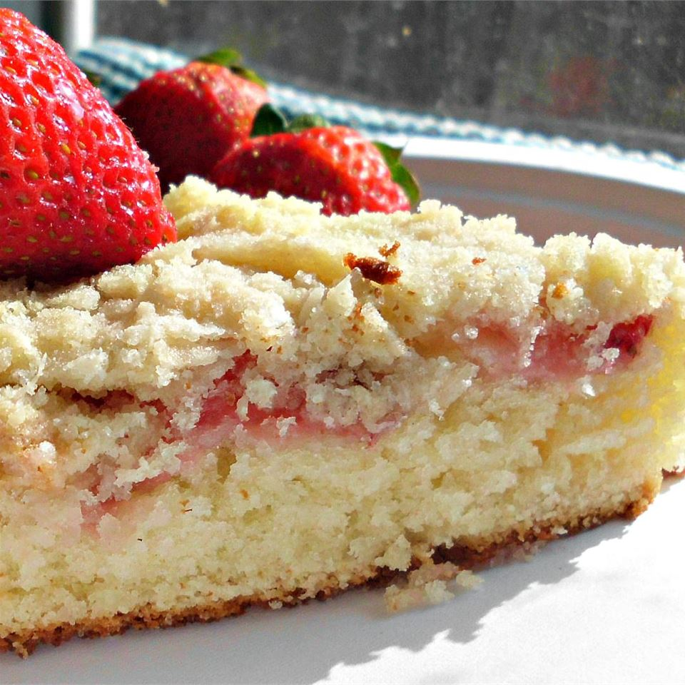

Fresh Strawberry Cake

A fresh and wonderful white coffee cake topped with strawberries
This crumb-topped coffee cake is perfect for the afternoon coffee. Topped with fresh strawberries, it becomes a perfect summer dessert!
Ingredients
12 servings
- 1/4 cup butter
- 3/4 cup white sugar
- 1 egg
- 1 & 1/2 cups all-purpose flour
- 2 tablespoons baking powder
- 1 teaspoon salt
- 1/2 cup milk
- 1 & 1/2 cups thinly sliced strawberries
- 1/2 cup all-purpose flour
- 1/2 cup white sugar
- 1/4 cup butter, softened
- 1/4 cup flaked coconut
Steps
- Preheat oven to 350 degrees F (175 degrees C). Grease a 9-inch baking pan.
- Beat 1/4 cup butter in a bowl until creamy; add 3/4 cup sugar and egg. Beat until fully incorporated.
- Mix 1 1/2 cup flour, baking powder, and salt together in a separate bowl. Stir flour mixture, alternating with milk, into butter mixture until combined. Pour batter into prepared baking pan. Arrange strawberries atop the batter.
- Mix 1/2 cup flour, 1/2 cup sugar, 1/4 cup butter, and coconut together in a bowl. Sprinkle topping over strawberries.
- Bake in the preheated oven until a toothpick inserted in the center of the cake comes out clean, about 35 minutes. Let it cool.
- Serve and enjoy!